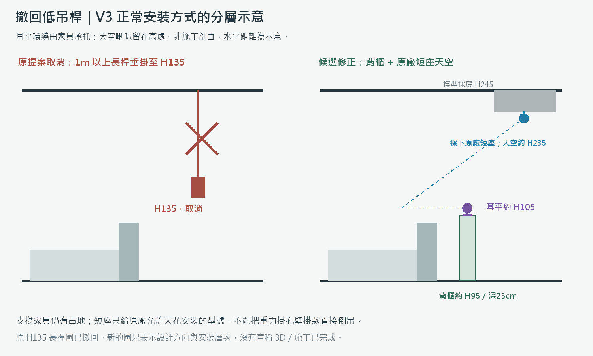

2026.09.14 · 重新評估 / 修訂 B
先決定正確聲場，再設計支撐它的空間
先前的長吊桿配置已撤回。把環繞吊到 H135、或者把前方喇叭掛在旋轉電視兩側的低處，雖然可能避開某個家具投影，並沒有完成合理的室內影音設計。舊的 44 點配置表、四版圖和 V3 高度圖已由本次重評取代。
我的優先建議：V4，其次 V1，採固定電視牆整合前聲道，搭配沙發背櫃上的小型環繞；V2、V3 則必須接受影音櫃變厚，才能保留旋轉電視又取消獨立主喇叭腳架。
如果旋轉版的底櫃必須保持原本 55cm 深、地面完全不增加家具，也不接受前方喇叭占位，這幾項要求目前不能一起滿足正常的離散 L/C/R 配置。我不會再用一組懸空的圖面圓點宣稱已解決。
採用的正常配置基準
以主座面向電視為 0°，前方 L/R 約 ±22–30°；5 聲道的 SL/SR 約 ±110–120°，聲軸靠近坐姿耳高。四天空另成一層，側視配置仰角約 30–55°。這些是家庭劇院目標區間，不是所有座位都會同時達到的角度；耳高 105cm 是本案模型假設，不是原廠規定。
依據：Dolby 5.1.4 圖、家庭劇院安裝指南。天空與耳平層必須分開；全部改天花會犧牲正確的高度分離。
重新檢查後，真正的衝突
- V1 看得較遠：南牆可用聲道中心間距約 285cm，原主座下前方左右各約 20°。候選方案把沙發朝電視移約 40cm，才到約 22°；V4 原主座約 23°。
- V2／V3 前後都缺乏適合直接壁掛的實牆：前方是旋轉電視，後方是落地窗。圖中補的是完整固定影音家具和沙發背櫃，不是掛玻璃或另插兩根吊桿。
- 旋轉電視不會帶著聲場轉向：本方案以沙發為主要電影位置。轉向中島時是次要觀看，不宣稱兩面都有正確的 5.2.4；若兩面都要求劇院定位，就需要另外的揚聲器組、路由與校正設計。
- 原 Ci160QR 背盒不足：模型 28×12×30cm 連外部體積都只有 10.08L。KEF 表列 Ci160QR 合理低頻的最低背腔為 13L、理想為 25.5L；扣除板材、單體後更不夠。因此不再沿用那個裸單體加小背盒的環繞做法。原廠容量表
- 旋轉版後天空與樑體衝突：模型東側 x1040–1085 是樑、樑底 H245。舊提案把靠窗天空當成 H273 的普通嵌入位置，未成立。新候選改為約 H235 的原廠樑下表面短座，仍屬天空聲道；樑體代理須與實際結構核對，不能直接挖樑。
四版如何取捨
| 版本 | 正常解法 | 必須接受的改動 | 判斷 |
|---|
| V1 圓弧中島酒吧＋玄關矮櫃 | 南牆壁掛／有背腔的嵌壁 LCR；沙發背櫃承托環繞；四天空重排。 | 沙發朝電視約 40cm；新增 285×25cm 背櫃。 | 可優先發展；仍要控制後方動線與中置高度。 |
| V2 旋轉電視＋小中島 | 窄身 LCR 固定到影音家具；背櫃環繞；後天空用原廠短座。 | 影音櫃約 195×115cm，較原櫃加深 60cm；背櫃 240×25cm。 | 代價最大；若想保留輕薄立屏，不推薦硬做此方案。 |
| V3 旋轉電視＋大中島 | 同 V2，拆收藏室讓櫃前後通路較有餘裕。 | 同樣需要較厚的影音櫃與背櫃；靠窗重低音候選微移讓開背櫃。 | 比 V2 寬裕，但不等於旋轉電視的音響限制消失。 |
| V4 大中島 | 南牆整合前方三聲道；背櫃環繞；四天空另排。 | 新增 285×25cm 背櫃；保留電箱可開啟的維修面。 | 四版中最適合兼顧乾淨外觀與完整聲場。 |
原廠安裝方式與選型方向
固定南牆的候選圖以 KEF Q4 Meta 的 40×25×14.2cm 壁掛箱體驗算；要更高規格，可研究 Ci3160RLM 類型，但 99mm 是安裝深度，還需要合理背腔、承重及裝修面，不能拿一片 10cm 薄板當完整音箱。其原廠容量表列合理／理想最低背腔為 30／60L。
旋轉版為了保留南北通路，圖面以 T301 的 60×14×3.5cm 窄身封閉箱體與同系列 T301c 中置驗算，使用原廠壁掛方式固定在影音櫃端板。這是證明安裝與空間形式的樣本，不代表薄型喇叭在動態、最大音量、低頻上等同 Q7 Meta。若要求更大聲壓，喇叭尺寸和家具要重新配套，不能只換一個名稱。
沙發背櫃可承托 Focal Dôme Flax 類型 的完整小型音箱，採原廠桌面方式、指向主座；其原廠另允許天花安裝，可作樑下天空安裝形式的參照。此處只評估形式與外形，前方三聲道優先同系列，環繞與天空的音色、指向及輸出能力仍須一起選定。
外觀和聲學一起處理
前牆以黑化金屬框與可拆的聲學布面整合喇叭，黑玻保留在不擋出聲與維修的位置；沙發背櫃用連續黑色檯面與深色木收納形成家具，兩端小音箱可見、可調方向。出聲面不封木板或玻璃。窗簾、局部吸音天花與織物控制玻璃反射；吸音處理與隔音是不同工作。
背櫃仍會使用 25cm 深的地面；旋轉版背櫃到窗簾約 58cm，只是窗簾維護空間，不是主走道。圖上的走道值是指定模型邊界的靜態值，不能替代門片、抽盤與家具使用狀態的完整核對。
兩顆重低音不按對稱外觀定案
橘色 SW1／SW2 是候選位置，尚未證實低頻最佳。V3 為讓開背櫃，原靠窗兩箱分別向北約 10cm、向南約 12cm；這只是解開外形碰撞。應先比較各候選在主座與旁座的頻率響應，再調距離、分頻、相位與電平。SVS 配置說明
如果重低音也要完全離開地面，應另評估專用嵌壁低音與背箱、擴大機、隔振和檢修；本次沒有把既有 SVS 塞进封閉展示櫃或吊起來。
V1 圓弧中島酒吧＋玄關矮櫃
適合優先發展固定電視牆與家具整合音響。

SVG 放大圖 · PNG 圖
V2 旋轉電視＋小中島
需要改造較厚的固定影音家具，屬於保留旋轉功能的折衷。

SVG 放大圖 · PNG 圖
V3 旋轉電視＋大中島
需要改造較厚的固定影音家具，屬於保留旋轉功能的折衷。

SVG 放大圖 · PNG 圖
V4 大中島
適合優先發展固定電視牆與家具整合音響。

SVG 放大圖 · PNG 圖
V3 高度示意：用正常的支撐方式分開兩層

目前完成到哪裡
已完成四版主座角度重算、上述櫃體占地與指定靜態淨距、原廠安裝形式和背腔資料核對，並撤回舊吊桿圖。尚未改動即時 3D。這組候選不是聲學模擬、結構定案或施工圖；也沒有宣稱每個座位、全部櫃門／抽盤、所有設備均已完成驗證。
保留四天空的旋轉版，須確認樑下原廠短座的安裝與指向；若無法成立，改評估兩顆正確定位的天空聲道，不把後天空塞進樑體。後續選型必須包含主座及旁座的聆聽高度、指向、目標音量和低頻量測。
候選座標與角度 · 核對範圍與限制 · 四版總覽
原廠來源
- Dolby 5.1.4 家庭劇院配置圖
- Dolby 家庭劇院安裝指南，第 5–8 頁
- KEF：壁掛、家具安置與空間取捨
- KEF Q4 Meta：原廠壁掛 LCR
- KEF T301：60×14×3.5cm 封閉箱體
- KEF T301c：同系列中置
- Focal Dôme Flax：桌面／壁面／天花安裝
- Focal Dôme Flax：原廠尺寸表
- KEF 嵌入喇叭背腔容量表
- KEF Ci3160RLM：開孔、安裝深度與背腔
- SVS：重低音位置與聆聽位置